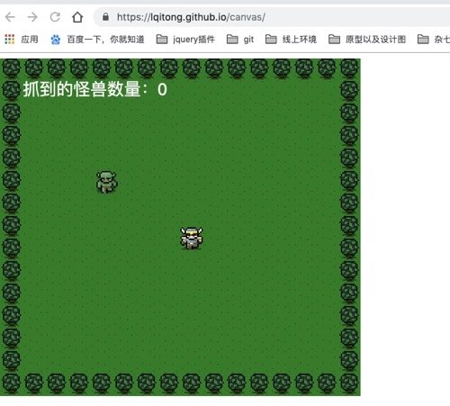

原文出处:本文由博客园博主蹉跎了岁月，血染了年华1提供。
原文连接:https://www.cnblogs.com/laoqitong/p/10716880.html
原文连接:https://www.cnblogs.com/laoqitong/p/10716880.html
首先，这是一个HTML：
<!DOCTYPE html>
<html lang="en">
<head>
<meta charset="utf-8">
<title>Simple Canvas Game</title>
</head>
<body>
</body>
</html>
<script src="../js/canvas.js"></script>然后，是canvas.js的内容，主要操作都在js中：
var cvs = document.createElement('canvas'); // 创建canvas标签
var ctx = cvs.getContext('2d');
cvs.width = 512; // 设置canvas的宽度
cvs.height = 480; // 设置canvas的高度
// cvs.style = 'border:1px solid #000;'; // 设置canvas样式
document.body.appendChild(cvs); // 将新建的canvas渲染到页面
// console.log(ctx);
// 准备背景图片
var bgReady = false;
var bgImg = new Image();
bgImg.onload = function () {
bgReady = true;
}
bgImg.src = "../src/images/games/images/background.png";
// 准备英雄图片
var heroReady = false;
var heroImg = new Image();
heroImg.onload = function () {
heroReady = true;
}
heroImg.src = "../src/images/games/images/hero.png";
// 准备怪兽图片
var monsterReady = false;
var monsterImg = new Image();
monsterImg.onload = function () {
monsterReady = true;
}
monsterImg.src = "../src/images/games/images/monster.png";
// 定义游戏对象
var hero = {
speed: 256 // 控制英雄每秒移动多少像素
}
var monster = {};
var monsterCaught = 0; // 抓到的怪兽数量
// 处理用户的键盘控制
var keysDown = {};
// 监听键盘按下事件
addEventListener('keydown', function (e) {
keysDown[e.keyCode] = true;
}, false);
// 监听键盘抬起事件
addEventListener('keyup', function (e) {
delete keysDown[e.keyCode];
}, false);
// 重开新一轮游戏的事件处理
var reset = function () {
hero.x = cvs.width / 2;
hero.y = cvs.height / 2; // 英雄的初始坐标
monster.x = 32 + (Math.random() * (cvs.width - 64));
monster.y = 32 + (Math.random() * (cvs.height - 64));
};
// 更新游戏对象事件处理
var update = function (modifier) {
if (87 in keysDown) { // 键盘按下“W”
hero.y -= hero.speed * modifier;
}
if (83 in keysDown) { // 键盘按下“S”
hero.y += hero.speed * modifier;
}
if (65 in keysDown) { // 键盘按下“A”
hero.x -= hero.speed * modifier;
}
if (68 in keysDown) { // 键盘按下“D”
hero.x += hero.speed * modifier;
}
// 碰到上下左右边界时
if (hero.x < 0) { // 左边界
hero.x = cvs.width - 32;
} else if (hero.x > cvs.width) { // 右边界
hero.x = 0;
} else if (hero.y < 0) { // 上边界
hero.y = cvs.height - 32;
} else if (hero.y > cvs.height) { // 下边界
hero.y = 0
}
// 判断是否抓住怪兽
if (
hero.x <= (monster.x + 32) &&
monster.x <= (hero.x + 32) &&
hero.y <= (monster.y + 32) &&
monster.y <= (hero.y + 32)
) {
++monsterCaught;
reset();
}
}
// 渲染物体
var render = function () {
if (bgReady) {
ctx.drawImage(bgImg, 0, 0);
}
if (heroReady) {
ctx.drawImage(heroImg, hero.x, hero.y);
}
if (monsterReady) {
ctx.drawImage(monsterImg, monster.x, monster.y);
}
// 上色
ctx.fillStyle = "rgb(250,250,250)";
ctx.font = "24px Helvetica";
ctx.textAlign = "left";
ctx.textBaseline = "top";
ctx.fillText('抓到的怪兽数量：' + monsterCaught, 32, 32);
}
// 主循环函数
var main = function () {
var now = Date.now();
var delta = now - then;
update(delta / 1000);
render();
then = now;
var w = window;
requestAnimationFrame = w.requestAnimationFrame || w.webkitRequestAnimationFrame || w.msRequestAnimationFrame || w.mozRequestAnimationFrame;
requestAnimationFrame(main);
};
// 启动游戏
var then = Date.now();
reset();
main();
初来博客园，还有许许多多不了解的地方，还请多多谅解。
成果展示：https://lqitong.github.io/canvas/
资源都在我的 github 上边儿，有兴趣的博友可以上去看看：https://github.com/LQiTong/canvas